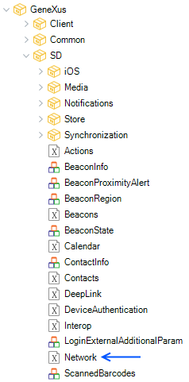
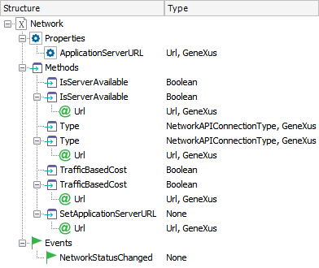

Network external object allows you to check the network status of the devices in order to have more information to take some actions. This API is often used in Offline Native Mobile applications to determinate the best moment to perform a synchronization.
|  |  |
It is a read-only property set automatically with the Services URL property of the Smart Devices Generator.
The property is then used by several methods explained below.
Returns True if the device can access the specified server; otherwise False. It checks if a package can be routed to the desired URL host; notice that no request is done to the current host. The server can be passed as an optional parameter by its URL. If the URL parameter is not present then the method will check the connection to the server URL of the property ApplicationServerURL.
| Return value | Boolean |
| Parameters | [ Url:URL ] |
Gets the connection type the device has to a specific server. There are some servers which are only accessed by local networks.
| Return value | NetworkAPIConnectionType |
| Parameters | [ Url:URL ] |
Returns true or false whether the connection between the device and the server could cause a monetary cost to the device user.
| Return value | Boolean | ||
| Parameters |
|
It allows to dynamically change the URL of the application. To carry this out, you have to set the Dynamic Services URL property to True.
| Return value | None |
| Parameters | [ Url:URL ] |
Note: In iOS available as of GeneXus 16 upgrade 3 and in Android as of GeneXus 16 upgrade 7.
Notifies when the network status change.
| Input | None |
| Output | None |
This domain is defined in order to identify the device's connection type.
It is based on Numeric(1) with the following enumerated values:
| None | No connection. |
| Wifi | Wi-Fi connection. |
| WAN | WAN connection. |
| Platforms | SmartDevices(Android,iOS) |
This external object is available as of GeneXus X Evolution 3.
| Backlinks | |
| Deploy mobile services to AWS Serverless using AWS Lambda and AWS API Gateway | |
| GeneXus Core module | Category:Smart Devices API |